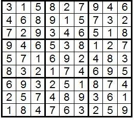

Introduction Of Sudoku
Sudoku is a puzzle that has enjoyed worldwide popularity since 2005. To solve a Sudoku puzzle, one needs to use a combination of logic and trial-and-error. More math is involved behind the scenes: combinatorics used in counting valid Sudoku grids, group theory used to describe ideas of when two grids are equivalent, and computational complexity with regards to solving Sudokus.
The game in its current form was invented by American Howard Garns in 1979 and published by Dell Magazines as "Numbers in Place." In 1984, Maki Kaji of Japan published it in the magazine of his puzzle company Nikoli. He gave the game its modern name of Sudoku, which means "Single Numbers.
" The puzzle became popular in Japan and was discovered there by New Zealander Wayne Gould, who then wrote a computer program that would generate Sudokus. He was able to get some puzzles printed in the London newspaper The Times beginning in 2004. Soon after, Sudoku-fever swept England. The puzzle finally became popular in the U.S. in 2005. It has become a regular feature in many newspapers and magazines and is enjoyed by people all over the globe.
The standard version of Sudoku consists of a 9×9 square grid containing 81 cells. The grid is subdivided into nine 3×3 blocks. Some of the 81 cells are filled in with numbers from the set {1,2,3,4,5,6,7,8,9}. These filled-in cells are called givens. The goal is to fill in the whole grid using the nine digits so that each row, each column, and each block contains each number exactly once. We call this constraint on the rows, columns, and blocks the One Rule.
The above-described puzzle is called a Sudoku of rank 3. A Sudoku of rank n is an n2×n2 square grid, subdivided into n2 blocks, each of size n×n. The numbers used to fill the grid in are 1, 2, 3, ..., n2, and the One Rule still applies.
Here is an example of a Sudoku puzzle and its solution:

These are 20 benefits and advantages of playing Sudoku regularly :
- Sudoku boosts logical thinking.
- Playing Sudoku improves memory & recall.
- Playing Sudoku is proven to slow the negative impact of Alzheimer’s.
- Sudoku helps to develop quick-thinking skills.
- Playing Sudoku helps to improve concentration.
- Solving a Sudoku puzzle provides a sense of accomplishment.
- Regular Sudoku playing minimizes the negative impact of Dementia.
- Puzzles like Sudoku help reduce anxiety & stress.
- Sudoku is a great way to develop child problem-solving skills.
- Playing Sudoku is a healthy form of escapism.
- Playing Sudoku is known to reduce overthinking.
- Sudoku is a healthy past-time.
- Playing Sudoku eliminates “ear-worm.”
- Sudoku promotes a healthy mindset.
- Playing Sudoku is fun for the whole family.
- Sudoku is a very affordable hobby.
- Playing Sudoku promotes healthy competition.
- Sudoku teaches resourcefulness.
- Playing Sudoku provides a healthy distraction.
- Sudoku gives some people a sense of belonging.
What most people don’t know is that Sudoku is not a mathematical game. It requires absolutely no arithmetic skills, but it does require logical reasoning. As you learn to arrange the numbers correctly, your logical thinking skills improve.
Logical thinking and memory go hand-in-hand. As your logical thinking improves, you will start to remember specific strategies and recall what worked in previous Sudoku puzzles. This can be used to remember and recall things in other areas of life. Don’t be surprised if you find yourself thinking about the game you just finished this morning and remember what you did to solve the problem.
Medical professionals will tell you that there isn’t really anything that can prevent Alzheimer’s
and that’s most probably true. However, they will also tell you that there are certain things that a person
can do to slow down the process of memory loss, which is what Alzheimer’s disease is all about.
What slows down Alzheimer’s memory loss? Keeping blood pressure regulated, daily exercise, memory training
exercises like puzzles are the key to slowing down the negative impact of Alzheimer’s. Strengthening the brain is
an integral part of Alzheimer’s treatment, and Sudoku is a great game to assist in the process.
Find that you’re not able to “think on your feet” or err before answering questions and organizing your thoughts? Play Sudoku for a few weeks, and all of that could change. Because Sudoku is a game that engages the brain throughout the puzzle-solving process, it helps to teach the brain to think quicker. The more you play it, the quicker your thinking skills will be.
If you have ever watched someone playing Sudoku, you will notice that they are entirely absorbed in the process. You won’t be able to solve a Sudoku puzzle if you are distracted by everything going on around you. Because of this, puzzlers who enjoy the game very quickly learn to focus their concentration on what they are doing in that very moment. This skill can be used in other areas of life where concentration and focus are required.
Of course, completing any difficult puzzle is an accomplishment, but what’s so important about that?
Having a sense of accomplishment is the number one element that keeps a person feeling motivated and positive.
If someone feels as if they never accomplish or achieve anything, chances are that they will start to feel depressed
and unmotivated. Are you feeling a bit like this yourself? Grab a game or 2 of Sudoku – that may soon change.
Playing mental games and exercises may not stop Dementia in its tracks when you already have it,
but studies have shown that brain exercise throughout life can help to build a healthy reserve of brain
cells and connections. This can minimize the risk of Dementia.
That being said, brain exercise is excellent for building reserves, which may compensate for damage
that is caused by diseases such as Dementia. Start playing Sudoku early on in life to ensure that your
brain is getting the workout it needs.
Had a long day and just need to unwind before your daily chores and responsibilities at home need to be tended to?
Feel anxiety rising before a big meeting or attending a social gathering? Mental puzzles, like Sudoku, can help to
calm the mind and keep stress and anxiety at bay.
Giving your brain/mind something else to focus on, other than the reason you are stressing/anxious, can help you
regain a sense of balance and calm. Not convinced? Try it for yourself the next time you feel stressed or anxious.
Children who struggle to solve problems merely need a bit of logical thinking development. This is where Sudoku shines. To solve a Sudoku puzzle, a child must engage in logic and go through a series of trial and error. It’s a great way to make problem-solving development fun.
Ever needed an escape, but don’t have the time to book a holiday or go out with your friends for drinks? Sudoku is used by many people as a healthy form of escapism. Leave your worries and stresses for a few minutes (or hours) and put your focus on Sudoku. It will provide a beneficial escape that helps to get your mindset right before having to tackle your usual stresses and struggles again.
Do you often find yourself stuck in a loop or overthinking? Do you replay situations in your head and
end up obsessing or worrying unnecessarily? You can refocus your mind on something else and break the
negative thought pattern by playing a few mind games.
Of course, there are many puzzles and games out there that can help with changing the habit of overthinking,
but Sudoku is, arguably, among the most effective and popular for this.
Hobbies aren’t too popular anymore, unfortunately. Most people choose to pass the time in rather unhealthy ways, such as drinking, overeating, gossiping, or obsessing over social media platforms. If you want to escape from unhealthy pass-times and do yourself a bit of good while passing the time productively, Sudoku is the answer. It will keep you occupied and will do your mental capacity good at the same time.
What if I told you that there was a way to eliminate that annoying song that you just can’t seem to get out of your head?
You know that song you keep humming and thinking about against your will? That annoying song stuck in your
head is called an “ear-worm,” and you can send it on its way by refocusing your brain on something new that
requires full brain engagement.
Not many games require quite as much mental engagement as Sudoku – and if you are looking for a game
that gets rid of ear-worm, Sudoku is it!
Without proper nutrition and physical exercise, the body becomes run down, and you start to feel lethargic
and unmotivated. A healthy diet and daily exercise boost happy vibes and get the body fit and healthy.
It’s the same for the brain. If the mind is never challenged, chances are that it will become complacent,
unhappy, and sometimes even negative.
Developing a healthy mindset is much like developing a healthy body. Feed and exercise the brain with Sudoku,
and you will feel the positivity creep in.
Looking for a relaxed game that the entire family can enjoy together? Sudoku is it. You can even host family Sudoku championships, for fun. What’s great about this numbers game is that it is available in a variety of difficulty levels, so everyone can find a level that suits their capability. Sudoku exercise books also make for great family gifts.
Some hobbies (regardless of how healthy or unhealthy they are) are quite costly. Sudoku isn’t. You can buy exercise and compilation books in most bookstores, but most newspapers and magazines nowadays also include Sudoku puzzles in them. Also, you can find many websites where you can play for free. That’s, at least, a free Sudoku puzzle for you every day.
Since Sudoku became a worldwide phenomenon, there have been annual World Championships held. Competitions are also held around the world in schools, clubs, and even in small Sudoku communities that have popped up. Competitions are usually based on how quickly players can solve the Sudoku puzzle.
Sudoku teaches players to utilize all of their resources. The game gives little away and teaches players to be resourceful in their problem-solving methods.
Ever felt like you need a distraction from the chaos and responsibilities of the day? Some people go outside for a
smoke break while others enjoy a stroll and a cup of coffee. What do you do? Many people have found that taking a
few moments of “rest” from their current challenging task can help them return to it with new found focus and vigor.
If you aren’t a smoker, stroller or coffee drinker, or even if you don’t want to leave the comfort of your desk,
Sudoku is the perfect distraction – and it’s healthy for the mind and body too.
Some people get addicted to video games and rush home to play online with
their virtual buddies.Others like to join social dinner groups or head out for activities
with friends. And then there are those who want to connect with other Sudoku aficionados.
Belonging to a group, club, or team, or even participating in competitions with likeminded people can
provide a sense of belonging. As humans, we all want and need to belong.